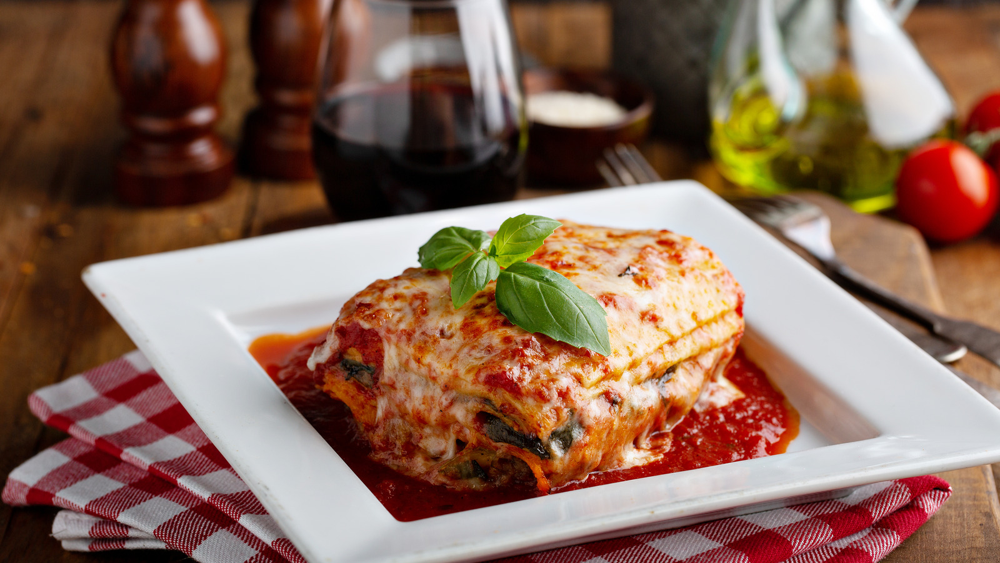

With its long history dating back thousands of years, lasagna is a popular Italian meal made with layered pasta sheets and flavorful toppings. It originated in ancient Greek and Roman cuisines when a dish known as “lagoon” was prepared using layers of pasta dough.

Go Back
How To Make It
- 1 1/2 lb. ground beef
- 1 lb. hot breakfast sausage
- 2 cloves garlic, minced
- 2 (14.5-oz.) cans whole tomatoes
-
4 Tbsp. dried parsley, divided
- 2 1/2 tsp. salt
- 3 cups low-fat cottage cheese
- 2 eggs, beaten
- 1/2 cup grated (not shredded) parmesan cheese
- 1 Tbsp. olive oil
- 1 (1o-oz.) package lasagna noodles
- 1 lb. sliced mozzarella cheese